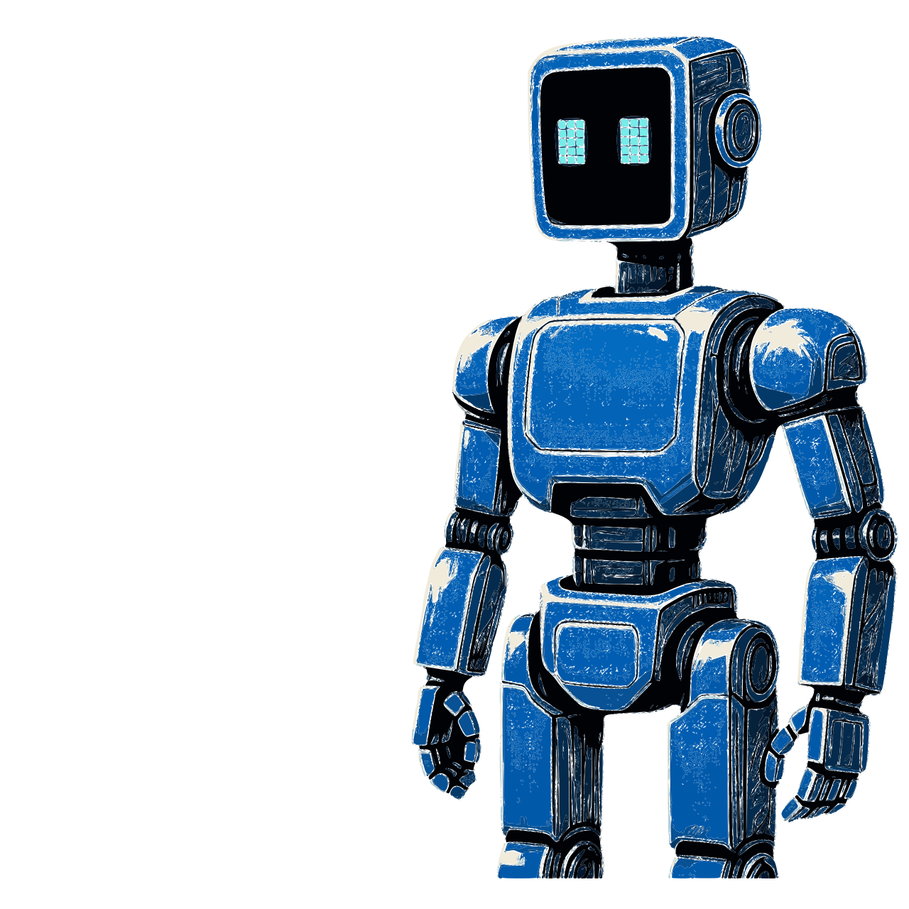

Welcome to anima-kit!
Tutorials for building AI agents
Learning how to build AI agents.
One demo at a time.
Tools
- Learn how to build the tools needed to power your agents.
- Create local tool servers that are easy to build and deploy.
- Combine servers to create a single stack of tools specific to your needs.
Agent Builds
- Learn how to build different types of agents to fit your needs.
- Modular builds starting from simple chatbots to specialized agents.
- Interact with agents through easy to use Web UIs.
Resources
- Full code and tutorials available for all server and agent builds.
- Step-by-step guides and in-depth tutorials for easily digestible modules.
- Clean and detailed docs for all code to facilitate understanding.

Learn how to
build tool servers